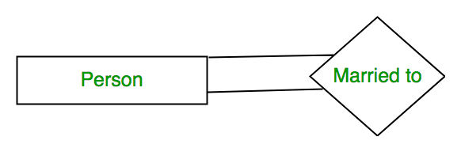

ER Model is used to model the logical view of the system from data perspective which consists of these components:
Entity, Entity Type, Entity Set –
An Entity may be an object with a physical existence – a particular person, car, house, or employee – or it may be an object with a conceptual existence – a company, a job, or a university course.
An Entity is an object of Entity Type and set of all entities is called as entity set. e.g.; E1 is an entity having Entity Type Student and set of all students is called Entity Set. In ER diagram, Entity Type is represented as:

Attribute(s):
Attributes are the properties which define the entity type. For example, Roll_No, Name, DOB, Age, Address, Mobile_No are the attributes which defines entity type Student. In ER diagram, attribute is represented by an oval.
- Key Attribute –
The attribute which uniquely identifies each entity in the entity set is called key attribute.For example, Roll_No will be unique for each student. In ER diagram, key attribute is represented by an oval with underlying lines. - Composite Attribute –
An attribute composed of many other attribute is called as composite attribute. For example, Address attribute of student Entity type consists of Street, City, State, and Country. In ER diagram, composite attribute is represented by an oval comprising of ovals. - Multivalued Attribute –
An attribute consisting more than one value for a given entity. For example, Phone_No (can be more than one for a given student). In ER diagram, multivalued attribute is represented by double oval. - Derived Attribute –
An attribute which can be derived from other attributes of the entity type is known as derived attribute. e.g.; Age (can be derived from DOB). In ER diagram, derived attribute is represented by dashed oval. The complete entity type Student with its attributes can be represented as:
The complete entity type Student with its attributes can be represented as:

Relationship Type and Relationship Set:
A relationship type represents the association between entity types. For example,‘Enrolled in’ is a relationship type that exists between entity type Student and Course. In ER diagram, relationship type is represented by a diamond and connecting the entities with lines.

A set of relationships of same type is known as relationship set. The following relationship set depicts S1 is enrolled in C2, S2 is enrolled in C1 and S3 is enrolled in C3.

Degree of a relationship set:
The number of different entity sets participating in a relationship set is called as degree of a relationship set.
- Unary Relationship –
When there is only ONE entity set participating in a relation, the relationship is called as unary relationship. For example, one person is married to only one person.
- Binary Relationship –
When there are TWO entities set participating in a relation, the relationship is called as binary relationship.For example, Student is enrolled in Course.
- n-ary Relationship –
When there are n entities set participating in a relation, the relationship is called as n-ary relationship.
Cardinality:
The number of times an entity of an entity set participates in a relationship set is known as cardinality. Cardinality can be of different types:
- One to one – When each entity in each entity set can take part only once in the relationship, the cardinality is one to one. Let us assume that a male can marry to one female and a female can marry to one male. So the relationship will be one to one.
Using Sets, it can be represented as:

- Many to one – When entities in one entity set can take part only once in the relationship set and entities in other entity set can take part more than once in the relationship set, cardinality is many to one. Let us assume that a student can take only one course but one course can be taken by many students. So the cardinality will be n to 1. It means that for one course there can be n students but for one student, there will be only one course.
Using Sets, it can be represented as:
In this case, each student is taking only 1 course but 1 course has been taken by many students.
- Many to many – When entities in all entity sets can take part more than once in the relationship cardinality is many to many. Let us assume that a student can take more than one course and one course can be taken by many students. So the relationship will be many to many.
Using sets, it can be represented as:
In this example, student S1 is enrolled in C1 and C3 and Course C3 is enrolled by S1, S3 and S4. So it is many to many relationships.
{kind=link}
Participation Constraint:
Participation Constraint is applied on the entity participating in the relationship set.
- Total Participation – Each entity in the entity set must participate in the relationship. If each student must enroll in a course, the participation of student will be total. Total participation is shown by double line in ER diagram.
- Partial Participation – The entity in the entity set may or may NOT participate in the relationship. If some courses are not enrolled by any of the student, the participation of course will be partial.
The diagram depicts the ‘Enrolled in’ relationship set with Student Entity set having total participation and Course Entity set having partial participation.

Using set, it can be represented as,

Every student in Student Entity set is participating in relationship but there exists a course C4 which is not taking part in the relationship.
Weak Entity Type and Identifying Relationship:
As discussed before, an entity type has a key attribute which uniquely identifies each entity in the entity set. But there exists some entity type for which key attribute can’t be defined. These are called Weak Entity type.
For example, A company may store the information of dependants (Parents, Children, Spouse) of an Employee. But the dependents don’t have existence without the employee. So Dependent will be weak entity type and Employee will be Identifying Entity type for Dependant.
A weak entity type is represented by a double rectangle. The participation of weak entity type is always total. The relationship between weak entity type and its identifying strong entity type is called identifying relationship and it is represented by double diamond.
Article Contributed by Sonal Tuteja. Please write comments if you find anything incorrect, or you want to share more information about the topic discussed above